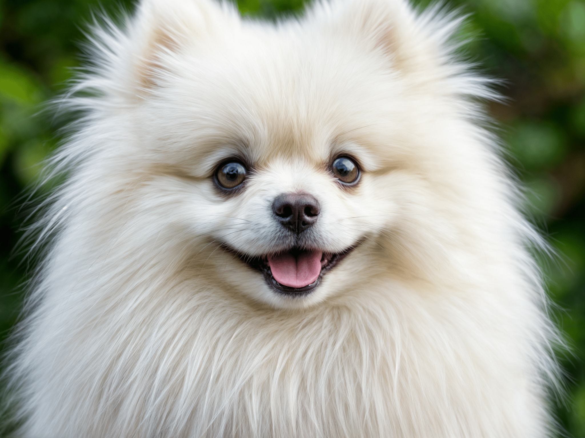

Presentación

El Pomerania es un perro de raza pequeña con un cuerpo compacto, un pelaje doble muy esponjoso y una cola alta y curvada sobre su espalda. Suele pesar entre 1,4 y 3,2 kg y medir alrededor de 18 a 30 cm de altura, manteniendo proporciones equilibradas y una expresión alerta que recuerda a los perros tipo spitz. El pelaje puede presentarse en una amplia variedad de colores, como naranja, crema, blanco, negro o marrón. :contentReference[oaicite:0]{index=0}
Personalidad
Los Pomerania son perros vivaces, inteligentes y con una gran personalidad en un cuerpo pequeño. Son cariñosos con sus familias y disfrutan de la compañía humana, pero también pueden mostrar un temperamento valiente y vigilante, lo que hace que sean buenos pequeños perros guardianes. Pueden ser curiosos y juguetones, aunque a veces muestran una actitud independiente. :contentReference[oaicite:1]{index=1}
Origen
La raza Pomerania proviene de la región de Pomerania, en el norte de Polonia y el noreste de Alemania, y es parte del grupo de perros tipo spitz. A lo largo de los años fue criándose selectivamente hasta convertirse en el pequeño perro de compañía que conocemos hoy, popularizado en el siglo XIX. :contentReference[oaicite:2]{index=2}
Salud
Los Pomerania suelen ser perros saludables con una esperanza de vida de alrededor de 12 a 16 años, pero pueden ser propensos a problemas de salud comunes en razas pequeñas, como luxación de rótula, colapso traqueal y problemas dentales. También pueden presentar afecciones oculares o problemas cutáneos si no se controlan adecuadamente. Es importante realizar revisiones veterinarias periódicas. :contentReference[oaicite:3]{index=3}
Aseo
El Pomerania tiene un pelaje espeso y abundante que requiere un cuidado regular para evitar enredos y nudos. Se recomienda cepillar el pelaje varias veces por semana y realizar baños suaves cada pocas semanas para mantener la piel y el pelo limpios. Además, es importante limpiar los oídos, recortar las uñas y cepillar los dientes con regularidad para prevenir problemas dentales. :contentReference[oaicite:4]{index=4}
Nutrición
Debido a su pequeño tamaño y rápido metabolismo, los Pomerania necesitan una dieta equilibrada y rica en nutrientes adaptada a su etapa de vida. Su alimento debe estar formulado para razas pequeñas, con porciones adecuadas y control de calorías para evitar la obesidad. Las comidas se deben ajustar según la edad y nivel de actividad, y siempre es recomendable consultar con un veterinario para asegurar una nutrición óptima. :contentReference[oaicite:5]{index=5}